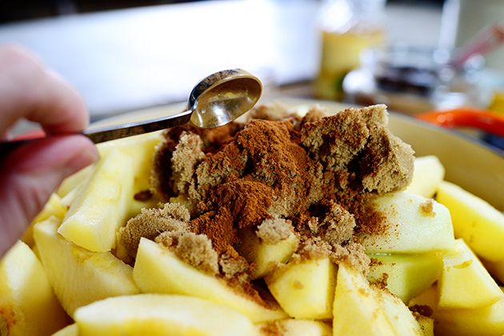

How to Make Applesauce
Step two: In a large pot, place your sliced apples. Add one cup of apple cider, squeeze in the juice of one lemon, add a half cup of brown sugar, and spice as desired. Great spices to include are cinnamon, ground cloves, ground nutmeg, and allspice.
